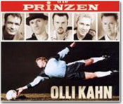

|

ドイツのGKオリヴァー・カーンに捧げるバリバリ・ロックなCDが、今品切れ状態だという。でも、これが読まれる頃には、ワールドカップの余韻もすっかり消えてしまっているのだろうか？ 決勝戦からまだ5日。そう簡単に熱は冷めない。録画ビデオや再放送、別ヴァージョンの映像などのおかげで、ライヴとは違ったおいしさを連日かみしめている。初めて聴く新譜に心躍らせ、気に入ればそのCDを何度もくり返し聴く、その行為とまったく同じだ。もっと何試合も見たかったのに、早々と敗退してしまったフランス、アルゼンチン、ポルトガル、イタリア、スペイン……そして誤審問題などもあって、不満がないわけではない。それでもやっぱりワールドカップは刺激的で楽しかった。いろいろな意味で。
ここは音楽や音について語ろう。
前回、開幕間もない時点で感じたサポーターの音やオフィシャル・ソングなどについて書いたが、今回は総集編として、耳に残った音や感じたことをアトランダムに並べていこうと思う。総括などするつもりはない。わたしの目と耳が拾った2002年FIFAワールドカップの音の記録である。
〈国歌〉
試合前、対戦両国の国歌が流れる。何分以内と決まっているのか、短いものはくり返され、長いものは省略され、あるいはテンポを調節される。ウルグアイ、パラグアイ、アルゼンチン、ブラジルといった南米諸国の国歌は、とにかく長い。イントロだけで何十秒から数分。そして、ちっともラテン風じゃなくて、オペラや管弦楽みたいな立派な曲だ。ブラジル国歌は活気と勢いがあって、戦いに向けて気分を高めるのに効果抜群のような気がする。でも、歌うの大変そう…っていつも思う。長いイントロをじーっと聴いたあとで、ようやく歌に入ればコロコロ転がる音符にぎっしりつまった歌詞。速いテンポで小刻みに揺れ動き、ときに急降下し跳躍するメロディは、「君が代」や「ゴッド・セイヴ・ザ・クィーン」とえらい違いだ。「ゴッド・セイヴ・ザ・クィーン」が簡潔な曲のせいでくり返されることに気づかず、気持ち良く歌い上げて拍手とともにワ〜〜〜ッと盛り上がったイングランド・サポーターたちが、くり返しに気づいて何か変だぞと思いつつ、バツ悪そうにまた歌い出す光景が何度もあった。初戦ではベッカムも「ハァ？」って不思議そうな顔してたし。一応5番まであるそうだが、ふだんくり返す習慣のない歌を都合でくり返されても困るだろう。「君が代」は短いが2番がないので、くり返されずに済んだのか？ 音を流す当の開催国だから、くり返す習慣のないふだんどおり行なったまでか？
勝ち残れば残るほど、その国の国歌を聴く回数が増えて、耳になじんでくるものだ。日本に勝ち、最後には3位に輝いたトルコ。その国歌は重苦しいマイナー調で始まり、途中でメジャーの平行調に一時的に転調する。はっきり言って、わたしは転調に弱い。小さい頃、中田喜直の「雪の降る町を」を初めて耳にして、「♪遠い〜国か〜ら」のところの転調に衝撃的に感動して以来の、転調フリークなのだ。それも一瞬の転調がいい。その瞬間、キラッと光るような美しさを感じるのだ。まさにそのツボにはまったトルコ国歌は、最後まですばらしく魅力的なプレイを見せてくれたトルコ・チームとイルハン・マンシスの笑顔とともに、深く心に残った。ハイドン作曲のドイツ国歌の完璧な美しさとは、また別の美しさを感じたのである。
ちょっと余談だが、トルコといえばオスマン・トルコ時代から伝わる軍楽がよく知られている。TVドラマやCMでも使われた、シンバル、大きな太鼓、大きなラッパが特徴的な楽隊が奏でる荘重な行進曲だ。その昔、モーツァルトやベートーヴェンは軍楽隊の小太鼓が刻む独特のリズムにヒントを得て、「トルコ風の」行進曲を作ったとか。いわゆる「トルコ行進曲」である。でも、実際にトルコの軍楽を聞いたわけではないらしい。どちらも有名なピアノ曲だが、TVでトルコ戦を取り上げるときには必ずといっていいほどモーツァルトのものがBGMにされている。確かに軽快でサッカーに合っているかもしれないが、トルコといえば「モーツァルトのトルコ行進曲」というのはどうなんだろう？
ちょっと前の2002 UEFAカップ準々決勝――フェイエノールトvs PSVアイントホーフェン――同点で迎えたPK戦で小野選手のいるフェイエの勝利を伝える映像のBGMが、オペラ『蝶々夫人』のアリア「ある晴れた日に」で、ソプラノ歌手の絶唱がものすごくよく映像にマッチしていたのを思い出した。似たようなものか……？
〈代表選手たち〉
優勝したブラジルのセレソンは、いつもサンバといっしょだ。スタジアムでは、サポーターのサンバ隊がずっと演奏し続ける中、その小気味良いリズムに乗って走りまわる。あのリズムを聴いたら、誰だって体も足も動かさずにいられなくなる魔法のリズムだ。移動中でもホテルでもパーティ会場でも、セレソンは自分たちで太鼓を叩き、陽気に歌い踊る。きっと計り知れないほど重いものをそれぞれの胸に抱えているだろうに、彼らはいつも屈託のない笑顔でサンバに興じる。サンバが身も心も解き放ち、そこからあの天衣無縫なブラジル・サッカーが生まれる。ロナウドやロナウジーニョの表情を見ていると、そう思いたくなる。
成績はパッとしなかったが、南アフリカの選手たちがおもしろかった。たまたま映像で見たのだが、スタジアムに到着したバスから降りてくるなり、みんな何やら歌って踊っている。そしてロッカールームまでの通路をずっと歌い踊りながら行進し、ロッカールームでも続けた。いきなりこのノリは何なんだ？と見ていて楽しくなってしまったが、こんなふうにしているチームが他にもあったのかな？
セネガル・チームは得点するたび、集まってサバール・ダンスという独特のダンスを披露する。サバールとは太鼓のことだそうだが、サポーターが試合中ずっと何種類かの太鼓を叩き続けている光景がよく映し出されていた。西アフリカといえば、トーキング・ドラム。あの太鼓の音には、きっと選手たちへの熱いメッセージがこめられていたのだと思う。
快進撃とダンスと太鼓のリズム。ここにもサッカーと音楽の強い結びつきを感じた。
〈サポーター〉
ブラジルのサンバも、セネガルの太鼓も、イングランドやアイルランドの大合唱も、その他さまざまなサポーターの応援を束にしても、「テ〜〜ハンミングッ！」にはかなわなかった。今大会で最も耳に残った「音」。真っ赤なスタジアム全体が巨大なスピーカーのようだった。最大音量で一糸乱れぬ正確な4拍子のコールをくり返す。この連載第1回の＜くり返す音楽＞にリンクしたいほどだ。徹底して単純な音型をくり返す〈ミニマル・ミュージック〉のマキシマムな展開。しかもその環境は全方位真っ赤。そこから生まれるパワーが韓国チーム大躍進のエネルギー源になっていたことは、間違いないだろう。対戦チームに対する負の効果も含めて?。
韓国サポーターの応援はこれだけではなく、だいたいいつも歌とコールで5種類ほどのレパートリーがある。やはりたくさんの歌のレパートリーを持つイングランドなどと違うところは、韓国サポーターの歌声が鳴り止む時がないという点だ。味方が攻撃しているときは各自で声援を送り、ピンチのときには勇気づける歌、得点のときには歓喜の歌、など相手に対するブーイングも含めて、試合の流れに沿ったメリハリのある応援をするのが欧州流。どちらが良いとか正しいとかではなく、流儀が違うということだ。
日本の応援もどちらかと言えば韓国と同じく、視覚的にも聴覚的にもベタなタイプ。でも、青一色のスタジアムは赤より落ちついた印象で、コールの調子もまったく違う。あと、毎回わたしが訴えていることだが、日本にはこれといった歌がない！ 結局、いつしか「オ〜オ〜」で歌う『アイーダ』の「凱旋行進曲」がメインのサポーター・ソングになってしまった感があるが、これはいろんな国で共通して歌われている定番で、日本のメインソングとするのはどうだろう？ それも、いつもどこでも、これ一曲？ もう少しレパートリーを増やそうではないか。ベスト8をかけたトルコ戦で敗退が決まったとき、パブリック・ビューイングの国立競技場にどこからともなく「上を向いて歩こう」の歌声が沸き起こった。このとき、負けてはじめて、あるべくしてサポーターの心からの応援歌が発生したように思えた。この流れが今後の応援に活かされるといいと思う。
「ニッポン！（チャチャチャ！）」のコールは、大きな２拍子。「ニッポン！」で両手を突き出して1拍。チャチャチャ！でまとめて1拍。だから、チャチャチャ！の手拍子がだんだん速くなりやすい。自然、だんだん加速度的にコールが速くなっていく。これ、本音でピッチ上の選手たちに聞きたいのだが、この「ニッポン！」コール、ほんとに役に立っている？ じつは、ある元バレーボール選手がこんな話をしてくれたのだ。〈あのコールは大っキライ。動きとのタイミングが合わない。チャチャチャ！とやられると、足が止まって前に進めなくなる。それに、ピンチのときほどくり返しやられて、どんどんテンポが速くなって、気持ちが焦ってくる。すごくブレーキになる応援だから、もう絶対やめてほしい！〉と。元選手は「自分だけかもしれないが」と言っていたが、気になる発言だと思い、了承を得て公開した。「ニッポン！チャチャチャ！」の由来は知らないが、今後はあらゆるスポーツの応援のあり方を、音楽的・心理的側面からも、よりよい方向に向けて研究していく必要があるだろう。サポーターは明らかに重要な一戦力であることが、今回のワールドカップを通してよくわかったのではないだろうか。
|